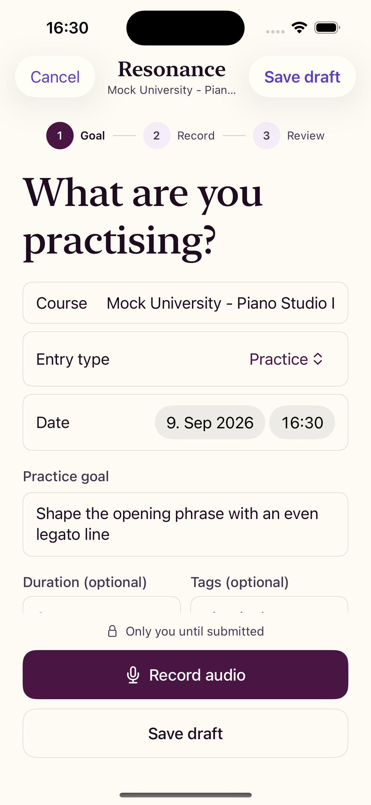
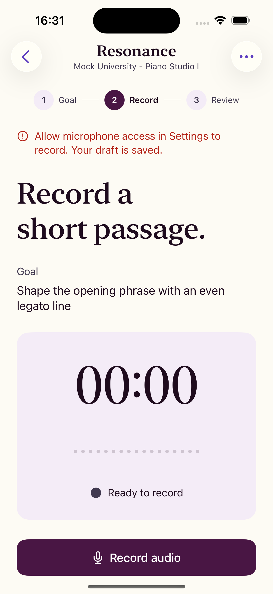
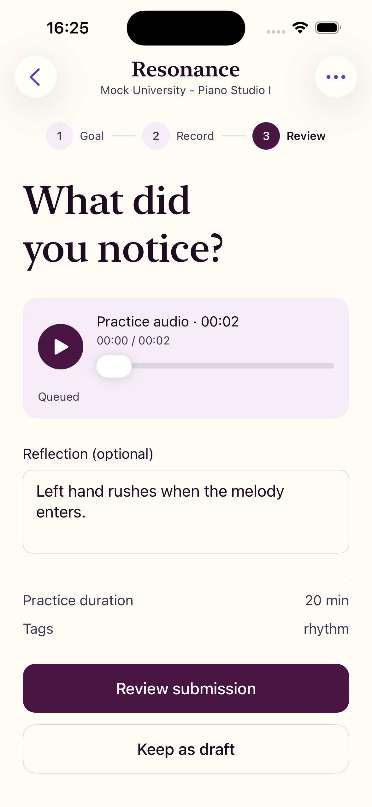
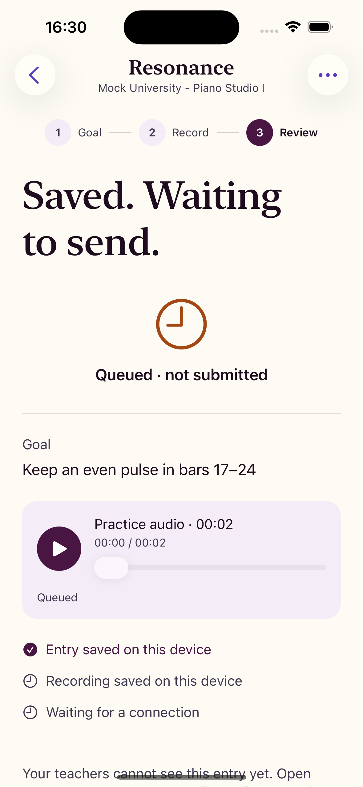
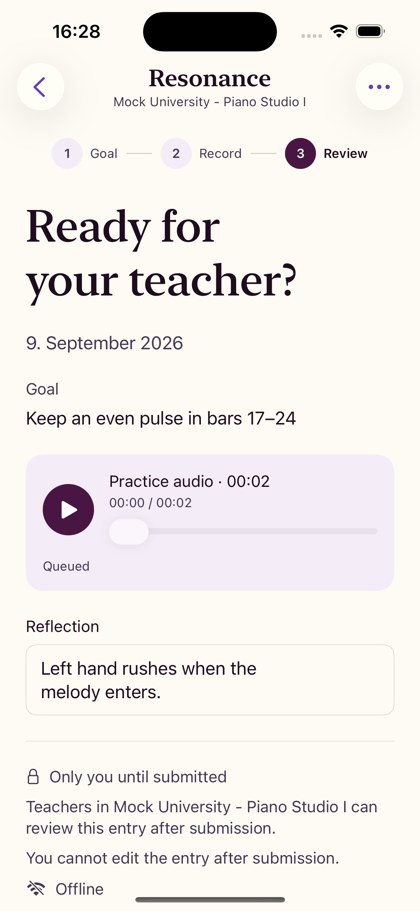
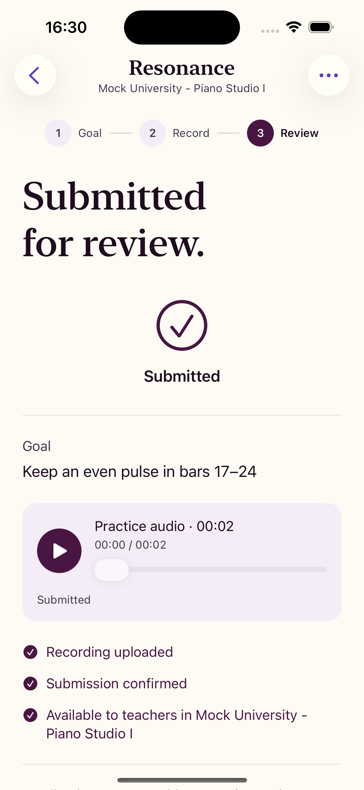
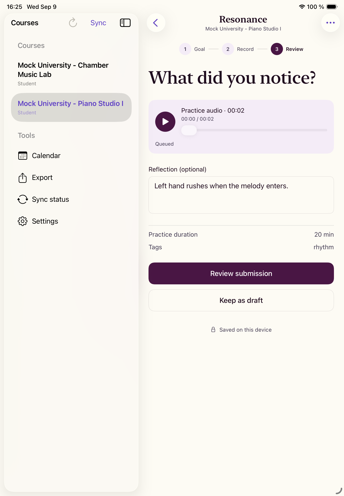
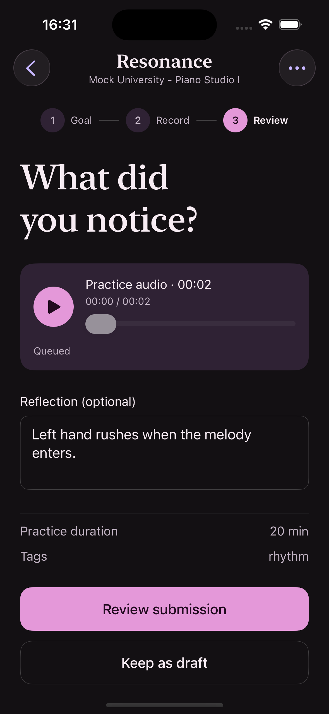
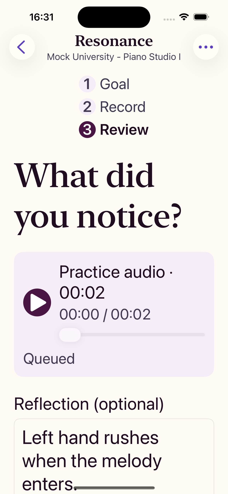

Inside the native app
The page above is a browser simulation. These images are the real iOS app running in a simulator against the deterministic demo fixture, so no student data or recordings are shown. The README carries the same tour.
-

PrepareSet the goal, entry type, and optional tags. -

RecordMicrophone denial keeps the saved draft. -

ReflectPlay the take, scrub, and note what to work on. -

QueueThe entry waits in the local outbox until it can sync. -

Final reviewRecipient, privacy, and finality before submitting. -

SubmittedConfirmation driven by the real entry state. -

iPadThe same flow in the split-view course shell. -

Dark appearanceState stays legible without relying on color. -

Larger textLayouts reflow with Dynamic Type. -
Final review, onlineThe screen names the current connectivity state.